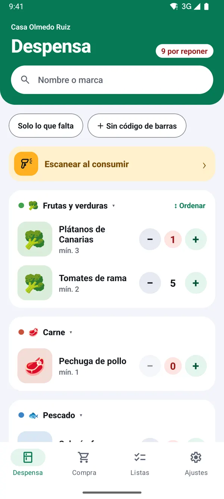
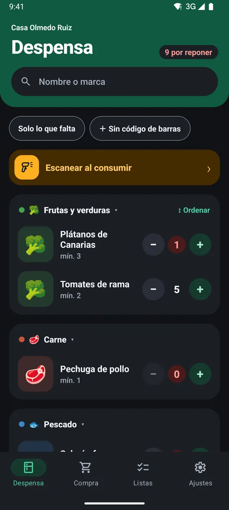
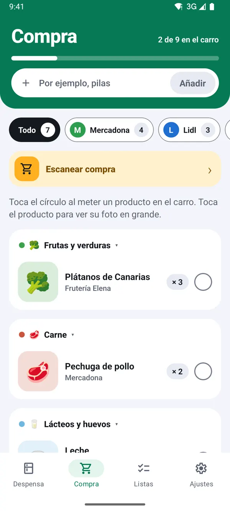
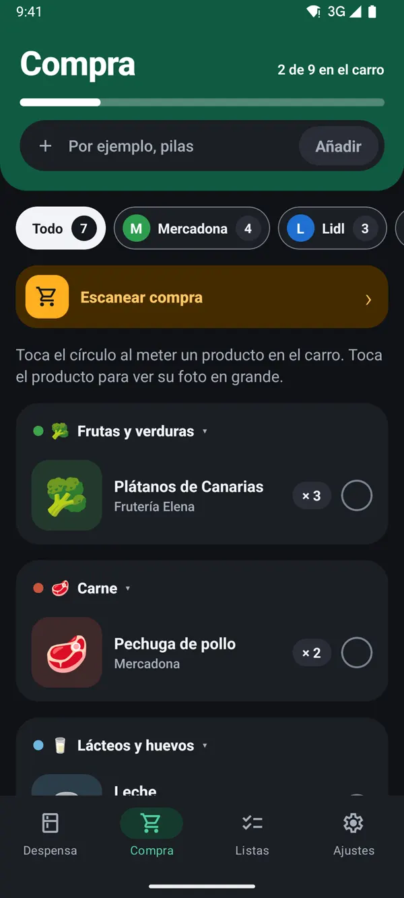

¿Cómo añado una foto a un producto?
Actualizado el 19 de noviembre de 2026
Abre el producto en la Despensa y, arriba del todo, pulsa «Hacer foto» o «Elegir de la galería». Tu foto sustituye a la imagen del catálogo y la ve toda la casa. Sirve sobre todo para lo que no tiene imagen: la fruta, el pan del horno o lo que añadiste a mano.
1Abre la ficha del producto
En la pestaña Despensa, toca el producto al que quieres poner foto. Se abre su ficha.
Truco: si no lo encuentras, usa Buscar arriba de la despensa y escribe parte del nombre o la marca.


2Pulsa «Hacer foto» o «Elegir de la galería»
Arriba de la ficha está el apartado Foto.
- Hacer foto abre la cámara.
- Elegir de la galería usa una foto que ya tengas en el móvil.
La primera vez, el móvil te pide permiso para usar la cámara o las fotos. Después puedes recortar la foto: se guarda cuadrada.
Pan de molde
Hacendado
Foto
Tu foto se muestra en lugar de la imagen del catálogo.
Nombre
Pan de molde
Marca
Hacendado
3Dónde se ve y cómo cambiarla
La foto se ve en la despensa y en la lista de la compra de todos los móviles de la casa. En la pestaña Compra, toca un producto para ver su foto en grande: ayuda a quien va al súper a coger el correcto.
- Para cambiarla, vuelve a pulsar «Hacer foto» o «Elegir de la galería».
- Quitar foto vuelve a la imagen del catálogo, si el producto tenía una.


TuDespensa es gratis y sin anuncios.
Llegará primero a Android y, más adelante, a iPhone. Las capturas son de la app con una casa de ejemplo.
Más guías
Escanear productos para que la despensa baje sola
El escaneo al gastar y el stock mínimo, paso a paso.
Compartir la despensa con tu familia
El código de la casa y cómo entra cada móvil.
Hacer la compra por supermercado
La lista por súper, el carro y terminar la compra.
Reponer la despensa con una foto del ticket 
De la foto del ticket a la despensa repuesta.
Qué incluye TuDespensa Pro y cuánto cuesta
Qué hace Pro, su precio, la prueba gratis y los tickets al mes.
Revisar el ticket antes de reponer
Dudas, productos nuevos y unidades, antes de confirmar.
Hacer una buena foto del ticket
Ticket entero, plano y con luz, o mejor el PDF.
Poner el código de barras a un producto
Productos sin código y los escaneados en el súper que quedan pendientes.
Juntar dos productos en uno
Productos repetidos o dos marcas de lo mismo, en uno solo.
Cuándo se añade un producto a la lista
La regla del mínimo, las unidades que pone y lo que añades a mano.
El stock mínimo y cómo ajustarlo
Elegir el mínimo, cambiarlo y usar el que sugiere la app.
Cómo organizar la despensa de casa
Familias, stock mínimo y un sistema que no dependa de la memoria de nadie.
Lista de la compra compartida en familia
Cómo dejar de comprar dos veces lo mismo y de olvidar lo que falta.